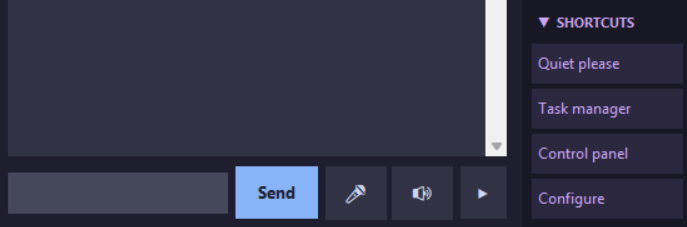

Configuration Manual
- Purpose: This manual explains how to configure myAssistente5 and make the most of its features.
- Prerequisites: The myAssistente5 executable for your operating system,
or alternatively the Python filesmyAssistente.pyand (optional, for AIML support)aiml_parser.py, with Python installed on your machine (multiplatform). - References: (1) Installation Manual, (2) User Manual.
Configure Shortcut buttons
Modify command aliases
Modify fixed responses
Enable Artificial Intelligence (API key and provider settings)
Configure audio/microphone
Configure avatars
Configure the config.json file
More… see the other manuals.
The names of all commands can be customized in the lang_XX.json file, and may therefore differ from those shown in this manual. See below for details.
📁 File locations
The file described in this manual is located inside the _dati/ folder.
- _dati/config.json: Main settings.
The config.json file
config.json file is missing, the system will notify you and generate a default one at startup.
If it exists but is corrupted, it will be renamed to config.json.bak and a new file will be created.
When changing the interface language, the system stores the information in config.json and saves a backup of the previous configuration in config.json.bak.
The full configuration can be performed directly from the myAssistente user interface using the configure command.
See the (2) User Manual for instructions.
Inside this file you can configure various parameters. Open it with a text editor:
First section: Avatar settings
{
"nome_avatar": "Assistant",
"nome_utente": "user",
"avatar_iniziale": "benvenuto",
"avatar_random": "generico",
"avatar_finale": "ciao.mp4",
"avatar_gruppi": {
"generico": [ "sorridente", "soddisfatto" ],
"positivo": [ "sorridente", "soddisfatto" ],
"negativo": [ "triste" ]
},
"avatar_colori": {
"benvenuto": "#89b4fa",
"sorridente": "#a6e3a1",
"soddisfatto": "#fab387",
"triste": "#f38ba8",
"magazziniere": "#cba6f7",
"ciao": "#94e2d5",
"default": "#6c7086"
},
"frase_finale": "Ciao!",
"lingua": "en",
In the (1) Installation Manual we already covered how to change the assistant and user names through the graphical interface.
Here you can also configure avatar images.
The names must match the files stored in _dati/asset/avatar/.
If no extension is specified, the system will look for a .jpg file; otherwise, specify it explicitly (e.g., ciao.mp4).
Open the _dati/asset/avatar/ folder, add new files or rename existing ones to match the configuration.
In the “avatar” fields you may enter either the name of an image or the name of an image group.
In the example, the initial image is benvenuto.jpg.
For the random avatar, the group generico is used, selecting randomly among sorridente.jpg, soddisfatto.jpg, coniglio.jpg, and agenda.jpg.
You may create as many groups as you like and assign any images to them.
As the final image, the example uses the video ciao.mp4.
When the image is missing from the folder, the assistant displays a placeholder square.
In avatar_colori you can define the color used for missing avatars.
In frase_finale you can set the sentence spoken by the avatar when myAssistente closes.
The lingua parameter (handled automatically) indicates the initial language at startup.
Second section: Audio/microphone settings
Audio settings for Text‑to‑Speech (TTS) and Speech‑to‑Text (STT). The default parameters are usually sufficient, but you may adjust them to improve audio quality.
Important note: this is where you set the language used by Google Speech for the assistant’s pronunciation.
The value is configured automatically, but you may change it for regional needs (e.g., en-GB instead of en-US).
"tts_config": {
"engine": "auto",
"rate": 150,
"volume": 0.9,
"pitch": 50,
"voice_gender": "auto"
},
"stt_config": {
"soglia_rumore": 200,
"sample_rate": 16000,
"max_secondi": 10,
"silenzio_secondi": 0.5,
"lingua": "en-US"
},
The "lingua": "en-US" setting is essential for correct pronunciation through Google APIs.
If your speakers and microphone work properly, you generally do not need to modify the other parameters.
If you use a female avatar and the system selects a male voice, you may adjust "voice_gender": "auto".
Third section: AI parameters (API and provider)
This section is optional: you can connect myAssistente to an external Artificial Intelligence.
If the system cannot find an internal answer (memory, fixed responses, AIML), instead of replying I didn’t understand, it will forward the question to the AI.
Set "enabled": true and enter the parameters and API key provided by your AI provider.
"ai_config": {
"enabled": false,
"provider": "openai",
"api_key": "",
"model": "gpt-3.5-turbo",
"temperature": 0.7,
"max_tokens": 500,
"fallback_to_ai": true
},
"enabled": false.
At the end of the file, you'll also find the priority settings to give the assistant for searching for answers when it can't find them internally:
"risposta_config": { "modalita": "aiml_then_ai" },
`aiml_then_ai` to choose AIML first; if no match, falls back to AI (default).
`aiml_only` for AIML only; if no match, shows "not understood" message.
`ai_only` to use external AI only; AIML is ignored.
Fourth section: Fixed responses
Fixed responses are predefined answers to specific questions. AIML files are usually preferred, but you may use this section if you want certain responses to have absolute priority over memory, AIML, and AI.
"risposte_fisse": {
"ciao": "Ciao, {nome_utente}!",
"author": "My author is Emanuele Cassani",
"credit": "©2026, Emanuele Cassani www.steppa.net/cassani",
"project": "https://www.steppa.net/cassani/articoli/myAssistente/myAssistenteENG.htm",
"manuals": "_dati\\asset\\manuals\\indice.html"
},
Here you can also configure the priority between internal AIML and external AI.
The default setting aiml_then_ai means the system checks AIML first and falls back to AI only if no match is found.
Fifth section: Command aliases
You can add or modify any command alias used by myAssistente. Each command may have multiple alternative words: the first appears in the graphical interface, while the others are accepted as synonyms.
Example:
"cerca": ["cerca", "ricerca", "prendi"]
In the lang_it.json file you can set the label shown on the button (e.g., “search…”).
The system normally uses the settings from lang_XX.json, but aliases defined here remain active even when the user changes the interface language.
You do not need to translate/modify those commands if the selected language file (e.g., lang_en.json) is present.
"alias_comandi": {
"dammi": [ "trova", "dimmi", "mostrami", "visualizza"],
"apri": [ "apri", "lancia", "avvia", "esegui", "metti"],
"cerca": [ "cerca", "ricerca"],
"elenca": [ "elenca", "lista", "mostra tutto"],
"configura": [ "configura", "impostazioni", "settings", "preferenze"],
"aiuto": [ "aiuto", "help", "comandi"],
"esci": [ "esci", "chiudi", "arrivederci", "quit", "exit"],
"impara": [ "impara", "apprendi", "inserisci"],
"ricorda": [ "ricorda", "memorizza", "salva"],
"modifica": [ "modifica", "cambia", "aggiorna" ],
"elimina": [ "cancella", "rimuovi"],
"copia": [ "copia", "duplica", "copy"]
},
Final section: Shortcuts
Shortcuts are quick‑access buttons available in the user interface. You can customize both the button label and the associated command.

Simply specify the button label and the command to execute.
If the command ends with a space (e.g., "command": "ok "), it will be inserted into the input field waiting for additional parameters.
If it does not end with a space, it will be executed immediately.
You may add as many buttons as you like, but only four will be displayed at the same time.
"shortcut": [
{ "etichetta": "Ho capito", "comando": "ok" },
{ "etichetta": "Estratto conto", "comando": "apri estratto conto" },
{ "etichetta": "Mail", "comando": "apri posta" },
{ "etichetta": "Browser", "comando": "apri web" }
],
Examples:
The “Ho capito” button interrupts the assistant while reading long texts.
You can also create shortcuts for Windows‑specific system commands (see DocENGrel5.x‑WindowsUsefulCommands.md).
Documentation
Available documentation for myAssistente5.
The documents are also available in the /DOCS folder of the repository.
For missing documentation, refer to previous English or Italian releases.
- (1) Installation Manual — installing the program for Windows, Linux, or multiplatform
- (2) User Manual — myAssistente user interface
- (3) Plugin Manual — myAgenda, myNote, myTodo
- (4) Configuration Manual —
config.jsonfile, advanced settings - (5) Memory Manual —
memory.jsonfile, advanced settings - (6) Language Manual —
lang[].jsonfiles, advanced customization - (7) AIML Manual —
aiml/[LANG]/[filename].aimlfiles - (8) Advanced AIML Manual —
aiml/IT/testConiglio.aimlfile